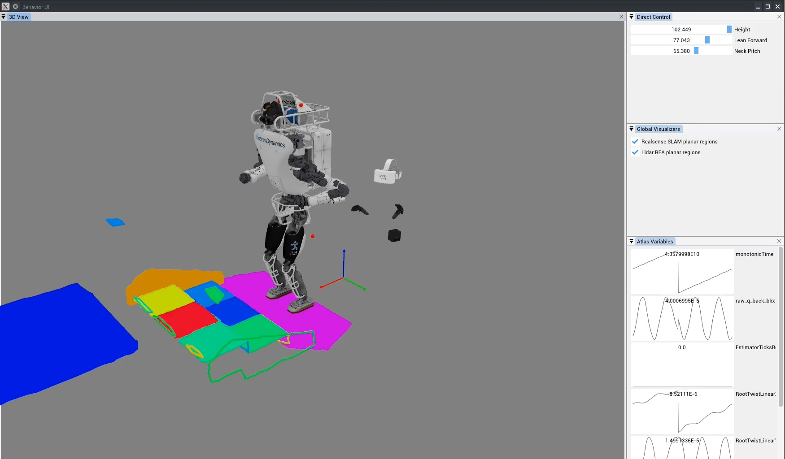
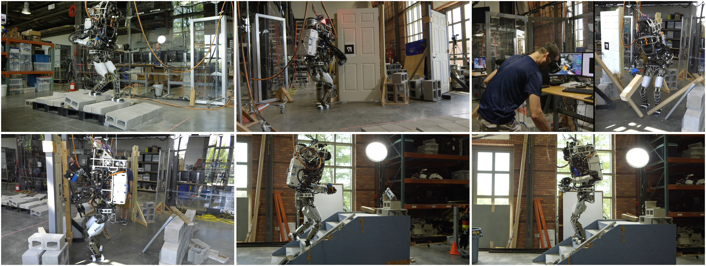

4.3. 2020-2021 Atlas, RDX, Behavior Tree Era
4.3.1. Evaluating Next-Generation Tooling
A Slack message from December 18, 2020, reads: “ because of the graphics adapters for 2D and 3D you can”t easily use the underlying engine features and you can’t share graphics code with even our other JME apps like the DRC UI. The JavaFX UIs, the (DRC) Operator UI, and SCS are basically not even close to being compatible with each other.’
In late 2020, we did a survey of software libraries in an attempt to build a framework that could act as a sandbox for robotic data exploration and planner development but also be extendable to state-of-the-art robot teleoperation. Additionally, since the promise of VR was now clear, we wanted to include VR support as a base function in all applications, such that switching between mouse and keyboard and VR was as simple as enabling VR and putting on the headset. We wanted the 3D scene to be shared between VR and the mouse and keyboard interface and treat VR as just another interaction method in the same class as monitor, mouse, and keyboard.
Another desirable characteristic of this new framework was ease of creating user interface widgets. Often for designing, tuning, and interacting with experimental planners, controllers, and perception algorithms, the engineer wants to tweak variables quickly and easily to see the effects on the process and the data. This is in stark contrast to considering user experience for every UI element. In our survey, we found a library called ImGui [58] which fit this bill perfectly, allowing user interface elements to be rendered in application code, in the same place as the interaction logic is handled, and in very few lines of code. It turned out to be a great way to provide base functionalities quickly while still allowing for custom rendered widgets that consider user experience.
Another goal of the new framework was to stay within the current software ecosystem so lab developers could seamlessly use it and contribute to it and so that existing lab tools could be used and not rewritten. Our existing code was in Java so this meant we wanted to stick with Java. Our thought was also to build on the most popular open-source tools in the community in order to avoid any rug pulls and also ride the wave of community maintenance and development.
For 3D graphics engines, there were two major competitors: jMonkeyEngine and libGDX [59]. The DRC UI was implemented using jMonkeyEngine but was on an old version. libGDX had more stars on GitHub, a vibrant community, and an API that was closer to plain OpenGL, the underlying library. Because we needed to maintain the DRC UI usability as a legacy app and it was somewhat tangled in an aging codebase, it was unclear if bringing it directly forward to modern libraries would work.
When designing the new framework, a few things were clear:
-
We wanted to adopt the pattern used by Eclipse IDE [61], where the application was a set of dockable panels. These panels should be showable and hideable, and the docking configurations should be easily savable and loadable. This system of UI design was shown to be very adaptable to different workflows and tasks. It is also similar to how other popular and versatile apps work, such as Blender [62].
-
We wanted to build in virtual reality (VR) support at the base level. If you didn’t have a VR headset, the app would operate normally. However, if you did, there was a checkbox to enable VR and you were able to jump into the main 3D view and interact with the same elements you could with mouse and keyboard. An element of the VR support was that the 3D view on the monitor would remain visible while in VR, and others could view the poses of the VR user’s headset and controllers in 3D by standing next to the computer.
-
We wanted to implement the main features of the DRC UI such as the gizmos, the walk path control ring, modifiable footsteps, and affordance templates.
ImGui [58] included support for the dockspaces of panels, multi-window support, and even saving those entire layouts to .ini files. OpenVR [60] was available for Java and supported any VR headset that would work in SteamVR, which is nearly all of them. We decided to rewrite the new framework from scratch and use libGDX, ImGui, and OpenVR.
4.3.2. Robot Data eXplorer

This effort ultimately culminated in the robotics sandbox application suite later named Robot Data eXplorer (RDX), shown in Figure 4.10. We wanted this set of tools to be useful for teleoperation, simulation, and perception and control algorithm development. It was designed in a similar spirit to SCS in that the user would first create a main entry point for their project and implement what they needed programmatically. For example, the application could be a test of a point cloud renderer, displaying it in 3D while also providing tuning widgets for point size, color, etc. We also wanted RDX to be versatile enough such that our primary applications could use it, such as our teleoperation interface (like the DRC UI). This meant that it needed to support not just utilitarian development widgets, but also custom rendered icons and interactive elements. ImGui and libGDX supported all of this and we now use RDX in 2026 as our primary teleoperation interface.
The DRC UI mainly supported keyboard controls for the gizmo. In RDX, we wanted to make it more intuitive to use by implementing click-and-drag controls for both orientation and translation. We implemented a mouse ray projection into the 3D scene in RDX which was generally available to any component in RDX. For the gizmo, this was used to intersect with the gizmo orientation control tori and translation control cylinders and cones. The gizmo’s axes are colored as Red, Green, and Blue, to match X, Y, and Z, and Roll, Pitch, and Yaw. The way to remember it is “RGB -> XYZ”. We also re-implemented the walk path control ring and virtual interactable footsteps, as shown in a 2022 screenshot in Figure 4.17.
The VR mode in RDX also featured ImGui widgets. The same panels available in the monitor, mouse, and keyboard modalities were also available as panels mounted on the wrist in VR, and they were operable via point and click with the VR controller. This continued the RDX design goals of reusability and versatility into the VR modality. We wanted VR to be simply another interaction method for the same data, not a separate framework. Additionally, we wanted switching between the monitor, keyboard, and mouse and virtual reality to be as simple as putting on and taking off the headset and picking up and setting down the controllers.
4.3.3. Perceptive Locomotion

In 2020, we started using the RealSense L515 depth sensor [33] for perceptive locomotion. Bhavyansh Mishra developed a planar region extractor using OpenCL [66] which enabled the development of a perceptive locomotion behavior with active perception while walking. This led to one of the first autonomous behaviors that used RDX as the user interface, as shown in Figure 4.11. This work is covered in the 2022 paper [64].
4.3.4. Behavior Trees
After the initial development of the perceptive locomotion behavior, “look and step”, we sought to build out multi-task behaviors as part of our building exploration demo. To assemble a hybrid teleoperated and autonomous multi-stage behavior, we looked to behavior trees. Figure 4.12 shows the very beginning of that effort in May of 2021. We pulled in an ImGui library called ImNodes and started rendering a tree of behaviors in a 2D canvas.

4.3.5. Semi-Autonomous Building Exploration

In June 2021, we worked on a building exploration demo which consisted of seven tasks with a hybrid autonomy model: an autonomous rough terrain traversal using perceptive locomotion, an automatic pull door behavior, VR teleoperated debris clearing, and automatic push door traversal, obtaining a mock pipe bomb from the top of a flight of stairs, walking back down, and placing the mock pipe bomb in a trash can. The tasks are shown in Figure 4.13. We successfully performed the demo on June 23, 2021, in 22 minutes.
This demo tested our ability to incorporate autonomous behaviors with operator supervision and teleoperation. Major innovations in the demo with respect to the DRC were VR kinematics streaming, continuous perceptive locomotion, and automatic push and pull door behaviors. However, the behavior structure for the locomotion, the door traversals, and the building exploration assembly were still hard-coded and not runtime editable, and perception of semantic objects was still reliant on fiducial markers. Push and pull door and stairs behaviors were selected by the fiducial IDs. The UI for this demo can be seen in Figure 4.14.

4.3.6. Perception Sensor Upgrades
After the building exploration demo, we switched from the MultiSense SL to the Ouster OS0-128 lidar sensor [34] in combination with a stereo pair of Blackfly cameras with fisheye lenses. A paper about this sensor suite is available at [67]. With the new sensor configuration, we had instantaneous dense lidar scans instead of needing to wait for the MultiSense SL to spin. This enabled us to develop the person following behavior shown in Figure 4.15.

References cited on this page
[33] “Intel RealSense LiDAR camera L515,” Realsense. Available: https://www.intelrealsense.com/lidar-camera-l515/
[34] Ouster, “OS0 ultra-wide field-of-view lidar sensor for autonomous vehicles and robotics.” https://ouster.com/products/hardware/os0-lidar-sensor, Apr. 2024.
[36] J. Redmon, S. Divvala, R. Girshick, and A. Farhadi, “You only look once: Unified, real-time object detection,” Proceedings of the IEEE conference on computer vision and pattern recognition, pp. 779–788, 2016.
[58] O. Cornut, “Dear ImGui.” 2024. Available: https://www.dearimgui.com/
[59] libGDX Community, “libGDX.” 2024. Available: https://libgdx.com
[60] Valve Software, “OpenVR.” 2024. Available: https://github.com/ValveSoftware/openvr
[61] Eclipse Foundation, “Eclipse IDE.” 2026. Available: https://eclipseide.org/
[62] Blender Foundation, “Blender.” 2026. Available: https://www.blender.org/
[64] D. Calvert, B. Mishra, S. McCrory, S. Bertrand, R. Griffin, and J. Pratt, “A fast, autonomous, bipedal walking behavior over rapid regions,” in 2022 IEEE-RAS 21st international conference on humanoid robots (humanoids), 2022, pp. 24–31. doi: 10.1109/Humanoids53995.2022.10000120.
[66] B. Mishra, D. Calvert, S. Bertrand, S. McCrory, R. Griffin, and H. E. Sevil, “GPU-accelerated rapid planar region extraction for dynamic behaviors on legged robots,” in 2021 IEEE/RSJ international conference on intelligent robots and systems (IROS), 2021, pp. 8493–8499. doi: 10.1109/IROS51168.2021.9636009.
[67] B. Mishra et al., “Perception engine using a multi-sensor head to enable high-level humanoid robot behaviors,” in 2022 international conference on robotics and automation (ICRA), 2022, pp. 9251–9257. doi: 10.1109/ICRA46639.2022.9812178.